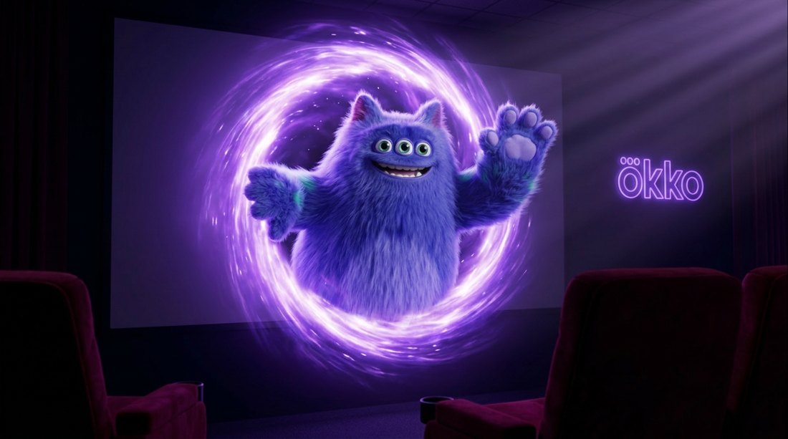
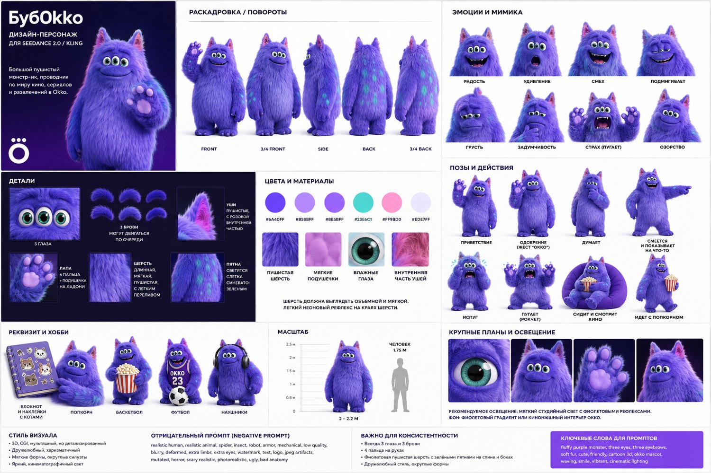
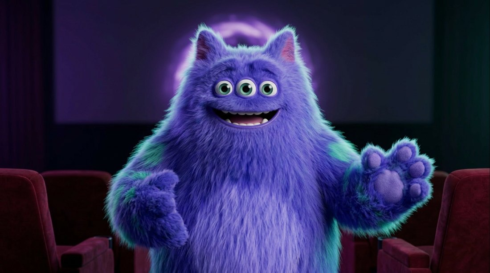
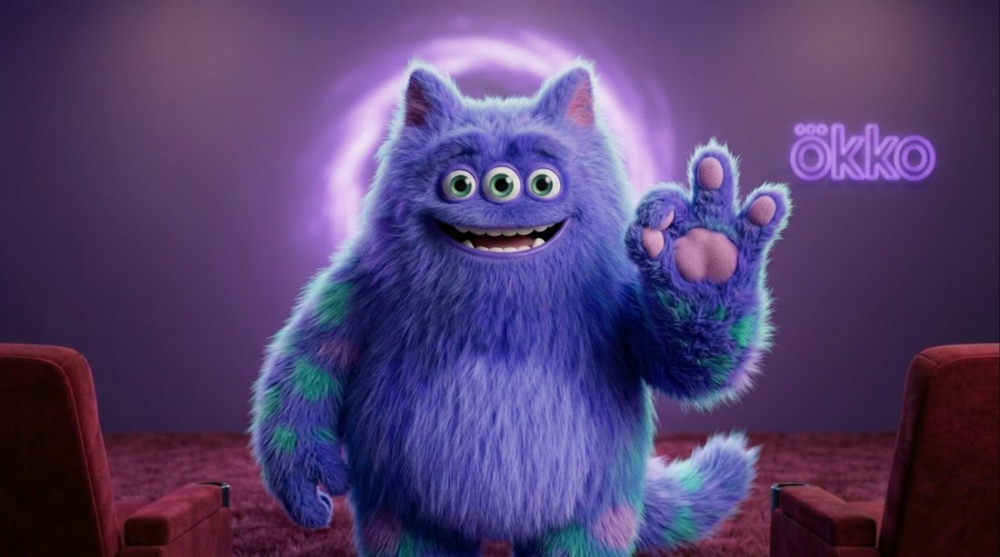
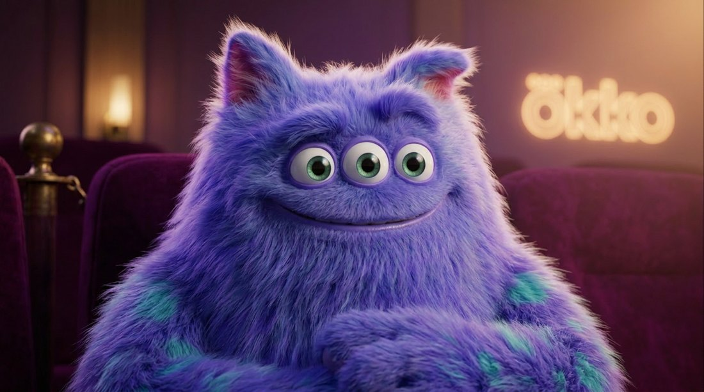
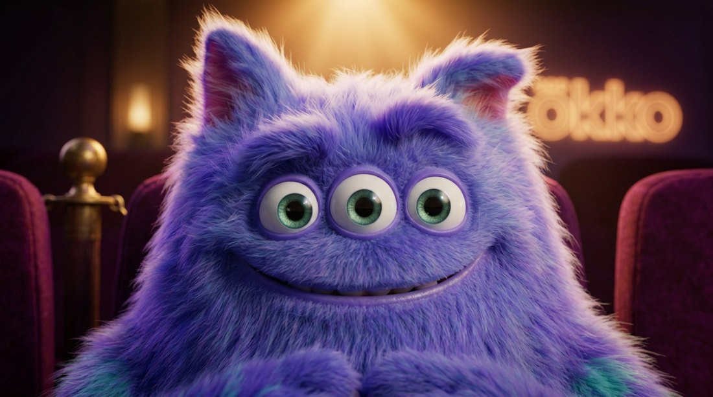
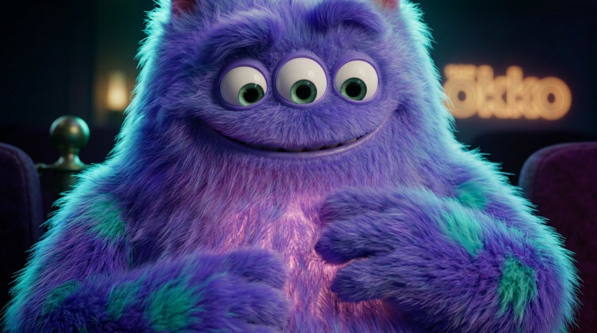
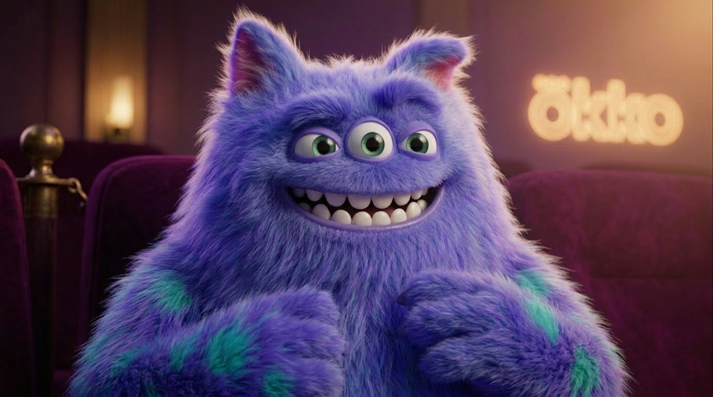
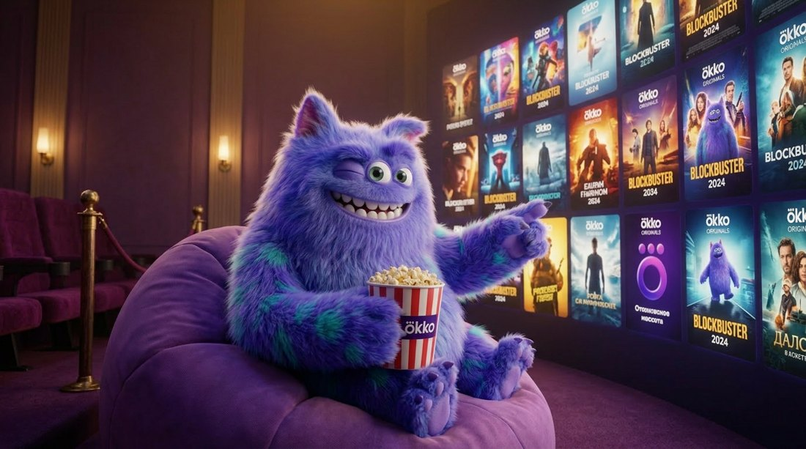

01 · WS · появление из портала
БубOkko уже завоёвывает сердца.
Сегодня масштаб ограничен ресурсами команды.
AI Content Agent снимает это ограничение.
Помнит весь проект: бренд-библию, канон БубOkko, удачные и неудачные кадры. Не нужно объяснять заново и прыгать между окнами и инструментами.
Модель зрения сама сверяет каждый кадр с каноном: 3 глаза, 4 пальца, цвета, бренд. Брак отбраковывается автоматически, без ручной проверки.
Агент сам переделывает неудачное. Вы тратите время на креатив, а не на дожимание каждого шага руками.
Больше пространства для креатива, меньше — для итераций. Хотите — вмешаетесь на любом этапе. Финальную сдачу всегда подтверждает человек.

Повороты, эмоции, позы, цвета, негатив-промпт — весь канон загружен в brain-сервис. Агент применяет его в каждом кадре и сверяет результат через VLM.
Разбор текста на биты
Кадры по библии персонажа
Сверка раскадровки с каноном
Клон голоса персонажа
Seedance 2.0 / Kling
Отбраковка брака, авто-переделка
Монтаж → готовый ролик
Каждый шаг — артефакт, который видно. Полный разбор этого ролика — в режиссёрском воркбуке.
Именно это и ловит VLM-верификатор: 3 глаза, 3 брови, 4 пальца, фиолетовый мех с бирюзовыми пятнами, розовые уши, голос-клон — одинаково в каждом кадре.
Реальные кадры, сгенерированные агентом по библии БубOkko. Каждый продуман: ракурс, оптика, свет, эмоция — и проверен на канон.








«Креативная команда в одном чате»
Оркестрирует модели под задачу. Но не знает ваш проект и не помнит попытки — персонаж каждый раз с нуля.
«Идея → готовое видео из промпта»
Быстрый text-to-video под соцсети. Без памяти персонажа и без авто-верификации — брак ловит человек.
«AI-видео для бизнеса», 160+ языков
Говорящие аватары для обучения. Это головы-дикторы, а не ваш брендовый маскот.
Наше место: brain-сервис по проекту и персонажу + VLM-верификация кадров + память удачных и неудачных попыток. Они оркестрируют модели — мы знаем ваш проект и сами проверяем результат.
Серии роликов, анонсы, реакции на матчи и релизы — БубOkko как ведущий контента Okko.
Обращения и подборки под зрителя — один герой, тысячи персональных версий.
Живой маскот для детей: отвечает, играет и реагирует в реальном времени.
Один живой маскот — и он везде, где есть ваш зритель.
По модели лицензии на агента БубOkko становится постоянным героем ваших роликов, соцсетей и кампаний — серийно, с памятью проекта и авто-верификацией бренда.